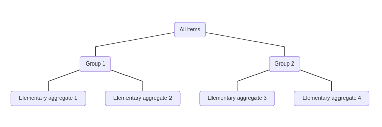
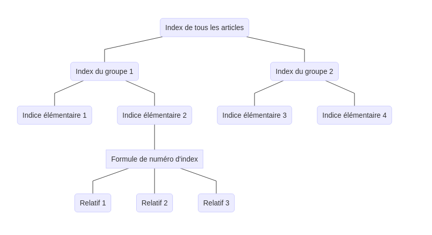

Sous-indices et agrégation
La plupart des indices des prix ont une structure hiérarchique (ou agrégée), de sorte que les biens et services sont divisés en groupes ou catégories de plus en plus larges qui s’étendent à tous les biens et services couverts par l’indice des prix. Par exemple, les marchandises d’un IPC peuvent être divisées en grandes catégories telles que la nourriture, le logement, le transport, etc. Ces catégories sont ensuite divisées en catégories plus petites; les aliments peuvent être divisés en viande, journal intime, volaille, etc. Ce type de structure présente l’avantage évident de fournir un indice de prix pour les sous-catégories de biens et services qui présentent souvent un intérêt à part entière (bien qu’il existe d’autres, plus raisons subtiles de vouloir structurer un indice de prix comme celui-ci). Le graphique ci-dessous donne un exemple d’une structure d’agrégation simple à trois niveaux.

Une structure hiérarchique ne pose pas de problème particulier pour créer un indice de prix — l’une des formules de numéro d’index de la section précédente peut toujours être utilisée pour agréger les prix relatifs des biens et services dans chaque groupe de la hiérarchie à produire une collection d’indices de prix pour chaque niveau de la hiérarchie. Le calcul de l’indice doit simplement être répété pour chaque groupe de biens et services dans la structure d’agrégation. Il s’agit de l’approche directe pour calculer un indice de prix avec une structure hiérarchique.
Cependant, avoir une structure hiérarchique suggère que le calcul peut être simplifié avec une procédure en deux étapes. Dans la première étape, les prix relatifs sont combinés au niveau d’agrégation le plus bas en utilisant l’une des formules de numéro d’index de la section précédente. Cela donne une collection d’indices de prix appelés indices élémentaires (ou élémentaires). Ces indices de prix donnent l’évolution des prix dans le temps pour de petits groupes de biens et services relativement homogènes appelés agrégats élémentaires qui constituent la base d’un indice de prix. Une fois les indices élémentaires calculés, les indices des niveaux d’agrégation supérieurs sont calculés en combinant les indices élémentaires à l’aide de pondérations. Ces pondérations fournissent une mesure de l’importance économique des biens et services dans chaque agrégat élémentaire afin de combiner les indices élémentaires pour former un indice de niveau supérieur. Si l’indice cible est un indice arithmétique, alors les agrégats élémentaires doivent être combinés avec une moyenne arithmétique pondérée; sinon, si un indice géométrique est l’indice cible, une moyenne géométrique pondérée doit être utilisée. Autrement dit, chaque agrégat élémentaire est traité comme un bien unique, les indices élémentaires étant les prix apparentés pour ces produits, et cette information est introduite dans une formule de nombre d’indice pour produire un indice de niveau supérieur.

Étant donné qu’il existe deux façons de calculer un indice de prix avec une structure hiérarchique, le calcul direct donne-t-il le même résultat que le calcul en deux étapes? La réponse est oui pour un indice arithmétique ou géométrique, à condition que les poids utilisés pour agréger les agrégats élémentaires soient formés en utilisant les poids sous-jacents pour l’indice cible. Par exemple, si l’objectif est de calculer un indice de Laspeyres, le poids d’un agrégat élémentaire devrait être la part des dépenses / revenus pour les biens de cet agrégat élémentaire au cours de la période 0. Comme les indices géométriques et arithmétiques sont calculés en tant que moyennes pondérées, il ne devrait pas être surprenant qu’un indice puisse être calculé en regroupant d’abord les parents de prix, en calculant les moyennes au niveau du groupe, puis en faisant la moyenne des moyennes au niveau du groupe pour former une moyenne globale. Par conséquent, ces indices seraient cohérents dans l’agrégation, bien que toutes les formules de nombre d’indices ne soient pas cohérentes dans l’agrégation. Par exemple, l’indice de Fisher n’est pas cohérent dans l’agrégation, et l’utilisation de la procédure en deux étapes pour le calculer donnera une réponse différente de celle du calcul direct.
Il est facile de montrer que tout indice arithmétique est cohérent en agrégation (le raisonnement pour le cas géométrique est presque identique). Supposons que les marchandises soient partitionnées en \(k = 1, \ldots, m\) catégories distinctes et mutuellement exclusives — c’est-à-dire qu’il y a \(m\) agrégats élémentaires. Si la catégorie \(k\) contient \(n_{k}\) biens, alors l’index arithmétique de cette catégorie est
\[\begin{align*} I_{k}^{A} = \sum_{i = 1}^{n_k} \frac{\omega_{ik}}{\sum_{j = 1}^{n_k} \omega_{jk}} \frac{p_{ik1}}{p_{ik0}}, \end{align*}\]
où \(p_{ik1} / p_{ik0}\) est le prix relatif du bien \(i\) dans la catégorie \(k\) et \(\omega_{ik}\) est le poids du bien \(i\) dans la catégorie \(k\). Ces indices \(m\) peuvent maintenant être agrégés ensemble pour former un indice global en prenant une moyenne pondérée de chaque indice, avec des pondérations données par \(\omega_{k} = \sum_{j = 1}^{n_k} \omega_{jk}\), de sorte que
\[\begin{align*} I^{A} &= \sum_{k = 1}^{m} \omega_k I_{k}^{A} \\ &= \sum_{k = 1}^{m} \omega_k \sum_{i = 1}^{n_k} \frac{\omega_{ik}}{\sum_{j = 1}^{n_k} \omega_{jk}} \frac{p_{ik1}}{p_{ik0}} \\ &= \sum_{k = 1}^{m} \sum_{i = 1}^{n_k} \omega_{ik} \frac{p_{ik1}}{p_{ik0}}. \end{align*}\]
Mais c’est exactement la même chose que si l’indice arithmétique avait été calculé en regroupant tous les parents de prix et en calculant directement l’indice, plutôt que de les diviser en groupes et de calculer l’indice en deux étapes.
Un avantage du calcul en deux étapes par rapport au calcul direct est que la formule d’indice utilisée pour calculer les indices élémentaires peut différer de la formule d’indice utilisée à des niveaux d’agrégation plus élevés. Cela peut sembler étrange de vouloir le faire, mais il existe un certain nombre de raisons théoriques et pratiques subtiles pour lesquelles une formule d’indice différente serait utilisée pour les indices élémentaires. Dans la plupart des applications, les indices élémentaires sont calculés à l’aide d’un indice de Jevons, en partie parce que des informations détaillées sur les quantités achetées ou vendues peuvent être difficiles à obtenir à des niveaux d’agrégation très faibles. Des niveaux plus élevés sont ensuite calculés comme un indice arithmétique, généralement un indice de Young ou Lowe.